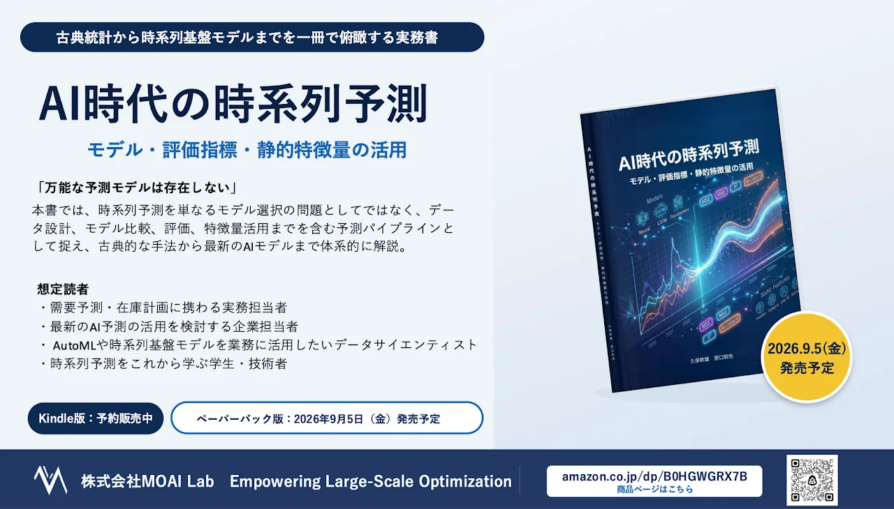

株式会社MOAI Lab（本社：東京都江東区、代表取締役：野々部宏司）は、企業の需要予測における実務課題に対応し、古典的な統計モデルから機械学習、深層学習、AutoML、時系列基盤モデルまでを体系的に整理した実務書『AI時代の時系列予測：モデル・評価指標・静的特徴量の活用』（著者：久保幹雄、原口和也）の紙書籍（ペーパーバック）およびKindle版を2026年9月5日よりAmazonにて発売予定です。

刊行の背景
需要計画、在庫管理、人員配置、設備運用、販売計画など、将来を見通した意思決定が求められるさまざまな業務において、時系列予測は重要な基盤となっています。
近年は、従来の統計モデルに加え、機械学習、深層学習、AutoML、さらに大規模データで事前学習された時系列基盤モデルまで、利用できる予測手法が急速に増えています。
一方で、選択肢が増えたことで、「どのモデルを選ぶべきか」「どの評価指標を使うべきか」「予測時点で利用できる情報は何か」といった判断は、以前より難しくなっています。
「万能な予測モデルは存在しない」
本書では、時系列予測を単なるモデル選択の問題としてではなく、データ設計、モデル比較、評価、特徴量活用までを含む予測パイプラインとして捉え、古典的な手法から最新のAIモデルまで体系的に解説します。
書籍概要
古典的な統計モデルから最新のAIモデルまで
季節ナイーブ法、指数平滑法、ARIMA、Theta法、Prophet、Croston法などの統計モデルから、LightGBM、XGBoost、CatBoostなどの機械学習モデル、DeepAR、Temporal Fusion Transformer、PatchTST、DLinearなどの深層学習モデル、Chronos、Chronos-Bolt、Chronos-2、Totoなどの時系列基盤モデルまで幅広く紹介します。
評価指標と業務上の損失
MAE、RMSE、MASE、RMSSE、WAPE、MAPE、SMAPEなどの点予測指標に加え、分位点損失、SQL、WQLなどの確率的予測指標を解説。予測精度の評価を、実際の業務上の損失や意思決定と結び付けて考えるための基礎を整理します。
特徴量とデータリーク
ターゲット、系列キー、静的特徴量、未来共変量、過去共変量など、時系列予測で扱うデータの役割を具体例とともに解説します。特に、予測時点では利用できない情報を誤って利用する「データリーク」について、実務上の注意点を整理します。
想定読者
本書は、以下のような方を対象としています。
- 需要予測・販売予測・在庫計画に携わる実務担当者
- 最新のAI予測の導入・活用を検討している企業担当者
- 予測結果を業務上の意思決定や計画立案につなげたい方
- AutoMLや時系列基盤モデルを用いた予測を業務に活用したいデータサイエンティスト
- 予測モデルの選択や評価方法を学びたい方
- 時系列予測をこれから学ぶ学生・技術者
今後の展望
MOAI Labは、「あらゆる意思決定の現場に、実効性のある最適化を」をミッションに掲げています。
本書『AI時代の時系列予測』を通じて、予測モデルの選択や評価といった実務上の課題に対する知見を提供し、需要予測や在庫計画をはじめとする企業のDXや意思決定の高度化をソフトウェアやソリューションだけでなく、知識・技術の発信という側面からも支援してまいります。
また、今後「数理最適化モデリング言語AMPL」に関する書籍の刊行も予定しています。AMPLは、業務の目的や制約を数理モデルとして表現し、最適な意思決定を導くモデリング言語で、40年以上にわたり世界中で広く利用されており、多様な最適化ソルバーと連携できることも大きな特長です。
Agentic AI時代には、複雑な業務ルールや制約をAMPLのようなモデリング言語を用いて、人にもAIにも理解しやすい形で表現することが重要になります。 AIと数理最適化をつなぐモデリング技術の重要性は、今後さらに高まると考えています。
今後の書籍刊行をはじめ、AI・数理最適化に関する最新情報をMOAI Labのメーリングリストで発信してまいります。
メーリングリストへの登録はこちら：https://www.moai-lab.jp/about/mailinglist
書籍のご案内
書籍名：『AI時代の時系列予測：モデル・評価指標・静的特徴量の活用』
著者：久保幹雄、原口和也
企画：株式会社MOAI Lab
発売日：2026年9月5日予定
販売形態：紙書籍（ペーパーバック）、Kindle版
ページ数：紙書籍：126ページ
価格(税込)：紙書籍：1,500円 Kindle版：1,000円
著者紹介
久保幹雄
専門は、サプライチェーンおよび組合せ最適化。1990年、早稲田大学大学院理工学研究科修了。博士（工学）。早稲田大学助手、東京商船大学助教授、ポルト大学招聘教授などを歴任し、現在、東京海洋大学教授、MOAI Lab CTO。
原口和也
専門はアルゴリズム論、組合せ最適化、グラフ理論。2007年、京都大学大学院情報学研究科修了。博士（情報学）。石巻専修大学助教および准教授、小樽商科大学准教授、京都大学准教授などを歴任し、現在、東京海洋大学教授。